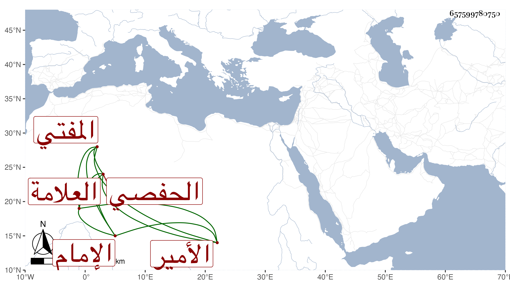

0902Sakhawi.DawLamic.ITO20230111-ara1.EIS1600.657599780750
Biography ID: 657599780750
585
حسين بن أبي فارس عبد العزيز الحفصي الإمام العلامة المفتي الأمير ابن أمير المسلمين . أراد الثورة على ولد أخيه لما استقر في المملكة بعد أبيه فظفر به فقتله وقتل أخوين له وعظمت المصيبة بقتل الحسين وذلك في سنة تسع وثلاثين ، وكان فاضلا مناظرا ذكيا ذكره لي صاحبنا الزين عبد الرحمن البرشكي . قاله شيخنا في أنبائه .
